It all started with PyCon India. I met a few students of Aligarh Muslim University who were trying to teach about FOSS in their college. A few them were already contributing to Coala. We talked a bit and they were discussing problems they were facing to run that community. I already started a Mozilla community at my college in the earlier days. Since I brought up a lot of folks from my college community in the event, we together discussed How to nurture FOSS communities in college as part of PyCon India Open Spaces. Here is a glimpse of the same:
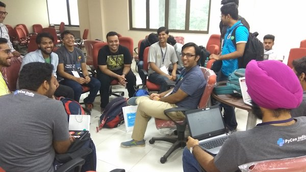Later, these folks were excited and invited me as a speaker at their college. A lot of planning happened for the event and we were in touch almost daily for different things. We planned the event one and a half month in advance. Finally, on 24th Feb 2018, we decided to have a full-day event around FOSS at Aligarh Muslim University.
We left from Delhi at around 6:30 AM in the morning. We then halted at a cafe known as Break Point around Aligarh to have breakfast. We reached the university at around 10:20 AM.
We took some time to test the entire set-up and the event began at around 11:30 AM. I took the first session on Why you should contribute to Open Source. We discussed the question that somehow pops up sooner or later into everyone's mind while contributing to Open Source: What's in it for me?.
We discussed various pathways one can begin contributing to Open Source Projects like coding, writing docs, managing team, advocacy, documentation, translation, bug triaging, reviews, organization skills, soft skills & tons of other things that come as a by-product.
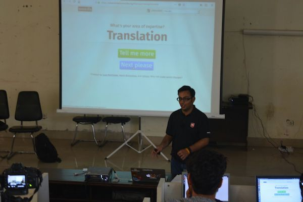You can find the slides here: Why you should contribute to Open Source?.
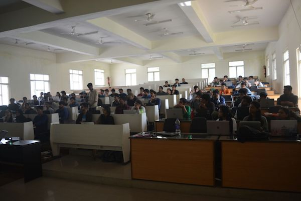We had a break for sometime and then started with the much awaited Add-ons session. Everyone was very excited to start learning to develop add-ons. I began with explaining the initial setup details & discussed JSON briefly to bring everyone on the same page. To make most out of the event, We also organized a few events previously to teach basics of JavaScript & JSON so that students so that they do not feel overwhelmed with the add-ons development.
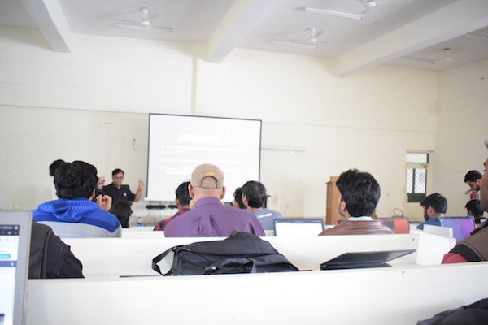Then Shashank (@realslimshanky) took over and discussed manifest.json and it's importance. Later we developed a simple addon -- borderify, which displays a border on every site the user visits. Some students also modified their scripts to make their add-ons do different things and posted them on twitter. Shashank, me and Shivam Singhal (@championshuttler) helped everyone with their problems during the development phase.
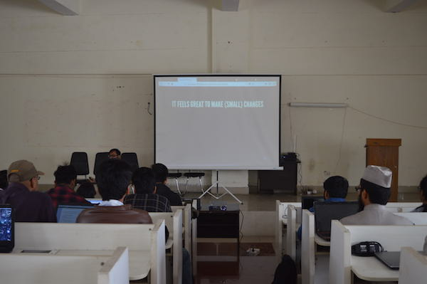Since all of us are devs, we were able to quickly resolve queries of students. One of the most important things I noticed is that often people misspell either the name of their manifest file or some key in their manifest people resulting their add-on to not load during the debugging phase.
A lot of them then created addons on their own and modified their previously created borderify addon to do more stuff. I've tried to collect some of them here. For a more verbose list you can visit Twitter and search tweets tagging me (@ErSanyamKhurana with #MozAMU.
Imaginations ran wild and one of the attendee created an addon that replaces the word Google with Mozilla on every web page. You can see his hack here
To make the session more interesting we gave add-ons stickers to anyone who answers the question about what we were just telling them. A lot of folks praised and tweeted about the addons they were generating. We were able to generate 10,000+ impressions with more than 4,000+ accounts reached on Twitter for #MozAMU.
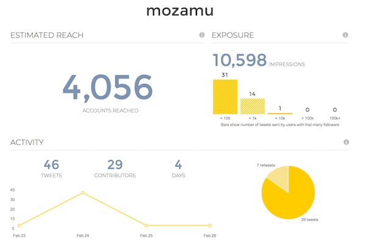 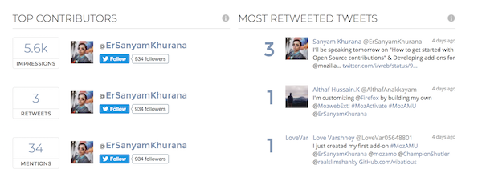You can read the full report here.
Till this time, I never introduced to anyone about who am I and most importantly not listed any of my contributions in any of the projects. I don't want them to feel overwhelmed and assume that we people have some sort of superpowers that we're able to patch bugs in any FOSS project. I always make it a point to encourage them and help them land their first patch.
And my introduction summed that up in just one line I'm one of you -- a part of the community.
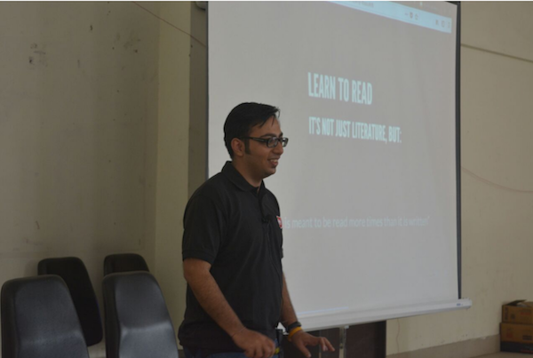We then hopped on to discuss How do I start contributing to Open Source? where we specifically discussed How to find bugs on different projects through Bugzilla & Bugsahoy.
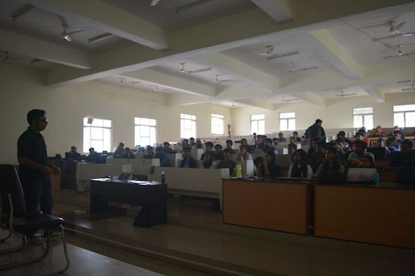You can find the slides here. Then I discussed other Open Source projects I've contributed to like CPython, Django, Oppia, Mozilla's Devtools, Gecko-Engine & tried to find out similarities in various bug trackers. We then had a group photo with some of the attendees.
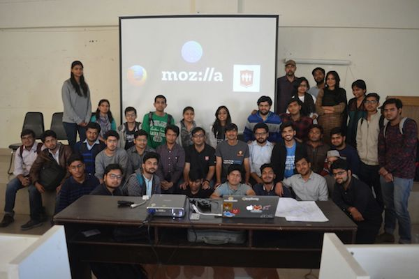It was already 5 PM and we didn't go for Lunch since students kept us busy with their questions during the lunch break too :P
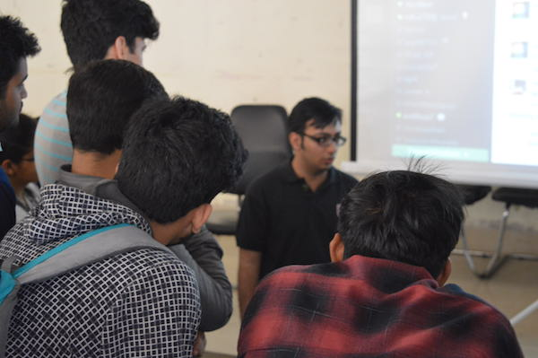So, we decided to hop-on to a restaurant nearby with the core-team of students that helped in organizing the event with so much enthusiasm.
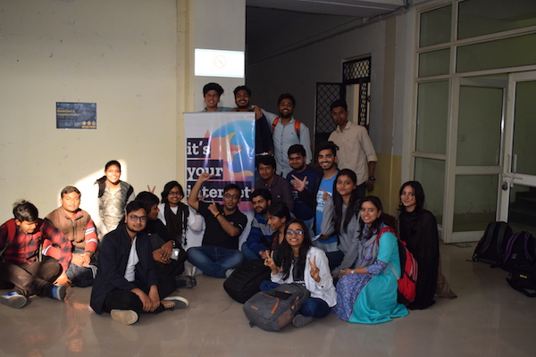Then we clicked one last photo before leaving Aligarh at around 7:00 PM with the core-volunteers of the event who helped in all the preparations for the event.
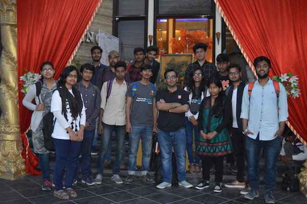In the end, I would like to congratulate the students for making so wonderful arrangements and pushing up the FOSS community in their college. I hope they will now start landing patches in different FOSS projects & we'll all meet again soon.
Comments !